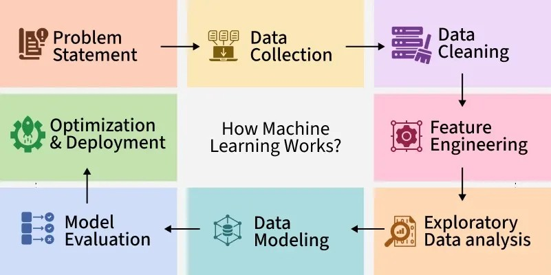

This folder contains a collection of machine learning projects showcasing different algorithms, techniques, and applications. Each project demonstrates the full workflow of building and evaluating ML models, including:
-Data Preparation: Cleaning, transforming, and splitting datasets.
-Model Development: Implementing algorithms such as Decision Trees, Regression, Classification, and Clustering.
-Model Evaluation: Measuring accuracy and performance with metrics like precision, recall, F1-score, and accuracy.
-Visualization: Using tools such as Matplotlib, Seaborn, and Graphviz to interpret results and model behavior.
-Model Deployment: Persisting models with `joblib` or `pickle` for reuse in real-world scenarios.
These projects cover both supervised and unsupervised learning, making the folder a comprehensive reference for practical machine learning applications.
.

Blinkit Sales Analysis Dashboard – Power BI Project
Developed an interactive Power BI dashboard to analyze Blinkit’s sales performance across multiple dimensions. The project focused on uncovering insights from historical sales data and translating them into actionable business intelligence. The dashboard includes key performance indicators (KPIs) such as total sales, average sales, product ratings, and number of items sold, while visualizing performance by fat content, product type, outlet size, location, and facility type.

Designed and developed multiple Power BI dashboards to transform raw datasets into actionable business insights across different domains, including sales, finance, supply chain, and customer analytics. Each project focused on building robust data models, creating interactive reports, and delivering visualizations that supported data-driven decision-making.
Bank Loan Report | Power BI
Designed an interactive dashboard to track and analyze loan applications, funded amounts, repayments, and default risks. The report includes dynamic KPIs (MTD, MoM trends), loan status breakdowns, and customer-level insights using Power BI, DAX, and SQL. This project demonstrates how business intelligence can transform raw banking data into actionable insights for smarter financial decision-making.

This project demonstrates the use of Machine learning techniques to detect fraudulent transactions.
Financial fraud is a major challenge for banks and online businesses, and machine learning models can help identify unusual patterns that indicate fraud in real time.
The project covers the full data science pipeline:
1. Data preprocessing and cleaning
2. Exploratory data analysis (EDA)
3. Model training and evaluation
4. Saving and deploying the trained model.

Just wrapped up a project using Long Short-Term Memory (LSTM) networks to forecast stock prices—and the results were impressive.
LSTM is a type of Recurrent Neural Network (RNN) that excels at learning from sequential data. Unlike traditional models, it remembers patterns over long time spans, making it ideal for financial time series like stock prices.
🔧 In my project:
I pulled historical stock data using pandas_datareader
Scaled and structured the data into 60-day sequences
Trained an LSTM model using Keras to predict future closing prices
Visualized predictions vs. actual prices to evaluate performance
💡 What makes LSTM stand out is its ability to capture long-term dependencies—a crucial feature when modeling market trends and investor behavior.
This project reinforced how deep learning can unlock smarter, data-driven decisions in finance. If you're exploring AI in trading or forecasting, LSTM is a must-try.

Donec eget ex magna. Interdum et malesuada fames ac ante ipsum primis in faucibus. Pellentesque venenatis dolor imperdiet dolor mattis sagittis magna etiam.